Mục tiêu học tập
Học xong Chương 4, bạn cần làm được từng việc dưới đây. Nhãn cho biết nội dung nằm ở mục nào.
- 4.3Giải thích nguồn gốc của magma trong mối liên hệ với kiến tạo mảng.
- 4.2Mô tả cách chuỗi phản ứng Bowen liên hệ nhiệt độ kết tinh và nóng chảy của khoáng vật.
- 4.1Giải thích quá trình nguội của magma tạo nên thành phần và kiến trúc của đá ra sao, và cách dùng chúng để phân loại đá magma.
- 4.1.3Phân tích đặc điểm của các dạng địa hình magma phổ biến và mối liên hệ với nguồn gốc của chúng.
- 4.4Giải thích nóng chảy từng phần và kết tinh phân đoạn, và cách chúng làm thay đổi thành phần magma.
- 4.5.2Mô tả ảnh hưởng của hàm lượng silica đến độ nhớt của magma và kiểu phun trào của núi lửa.
- 4.5Mô tả các kiểu núi lửa, kiểu phun trào, thành phần và bối cảnh kiến tạo mảng của chúng.
- 4.5.3Mô tả các hiểm họa núi lửa.
Cách dùng tài liệu này
Các từ được gạch chân là thuật ngữ chính. Nhấn vào từ đó, hoặc mở Thuật ngữ ở góc dưới bên phải, để đọc và tìm mọi định nghĩa của chương. Các hình động sẽ đứng yên nếu thiết bị của bạn bật chế độ giảm chuyển động; khi đó hình tĩnh cho thấy trạng thái cuối.
4.0Magma, dung nham và đá magma
(đá lửa; igneous rock) hình thành khi đá lỏng đông cứng thành đá rắn. Vật chất nóng chảy được gọi là (magma) khi còn ở dưới lòng đất và (lava) khi đã lên tới bề mặt. Chỉ có nhân ngoài của Trái Đất là lỏng một cách tự nhiên; manti và vỏ đều ở thể rắn. Magma chỉ hình thành trong những túi nhỏ gần bề mặt, nơi các quá trình địa chất gây nóng chảy, và chính các túi này nuôi núi lửa và đá magma.
(volcanism) là quá trình phun trào dung nham. Tùy tính chất của dung nham, nó có thể từ êm dịu đến nguy hiểm và bùng nổ, dẫn đến các kiểu núi lửa và hiểm họa khác nhau. Mối liên hệ giữa tốc độ nguội và kích thước hạt là chìa khóa để đọc lịch sử của một đá magma.

4.1Phân loại đá magma
Đá magma được phân loại theo hai tiêu chí. Kiến trúc mô tả đặc điểm vật lý của khoáng vật, như kích thước hạt, và ghi lại lịch sử nguội của magma. Thành phần là thành phần khoáng vật và hóa học của đá. Lịch sử nguội cũng có thể làm thay đổi thành phần (Mục 4.4).
4.1.1 Kiến trúc
- Hạt thô. Magma nguội chậm sâu trong vỏ tạo thành đá (intrusive), hay (plutonic). Tinh thể có thời gian lớn lên và dễ thấy bằng mắt: (hạt thô; phaneritic), như ở granit.
- Hạt mịn. Dung nham phun lên bề mặt, hoặc len vào các khe nứt nông, nguội nhanh thành (extrusive), hay (volcanic). Hạt quá nhỏ để thấy bằng mắt thường (; aphanitic) và cần kính hiển vi thạch học, như ở bazan.
- Không có tinh thể. Dung nham nguội cực nhanh tạo thành không kết tinh, không phải khoáng vật. Nó phổ biến trong tro núi lửa và trong (obsidian), loại đá có vết vỡ vỏ sò giống thạch anh (Học phần 3).
Một số đá có cả hai cỡ hạt. Trong (porphyritic), các tinh thể lớn gọi là (phenocryst) nằm trong hạt mịn (groundmass, matrix). Kiến trúc này ghi lại quá trình nguội nhiều giai đoạn: nguội chậm sâu dưới lòng đất, rồi nguội nhanh hơn sau khi magma lên tới độ sâu nông hơn hoặc bề mặt.
Dung thể tàn dư thoát ra từ một khối xâm nhập có thể tạo mạch hoặc khối gồm các tinh thể rất lớn của fenspat, thạch anh, beryl, tourmalin và mica. (pegmatitic) cho thấy quá trình kết tinh rất chậm; đá chủ yếu có kiến trúc này là (pegmatite). Các tấm muscovit trong pegmatit lớn đến mức từng được dùng làm cửa sổ thời Trung Cổ.
Mọi magma đều chứa các khí hòa tan gọi là (volatiles). Khi magma đi lên, áp suất giảm làm chúng sủi ra khỏi dung dịch, như bọt khí khi mở chai nước ngọt. Bọt khí bị giữ lại trong dung nham đang đông cứng tạo (vesicular), và các lỗ là (vesicle). Đá núi lửa có nhiều lỗ hổng khí là (đá bọt xỉ). Khi dung nham giàu chất bốc bị tôi rất nhanh, nó trở thành một khối bọt thủy tinh như kem lòng trắng trứng, gọi là (pumice), có thể nhẹ đến mức nổi trên nước.
Các vụ phun nổ ném dung nham, đá, tro và khí lên không trung. Phần rắn, (tephra), lắng xuống và nguội thành đá có (pyroclastic: "pyro" = lửa, "clastic" = mảnh vụn đá): hỗn hợp hỗn độn gồm tinh thể, mảnh thủy tinh sắc cạnh và mảnh đá. Mạt vụn núi lửa được gọi tên theo kích thước: (ash; < 2 mm), (lapilli; 2–64 mm) và hoặc khối (bomb, block; > 64 mm). Đá tạo từ các lớp mạt vụn núi lửa dày là (tuff); nếu các mảnh chất đống khi còn nóng và dính kết lại thì đó là (welded tuff).
 Porphyrandesit
Porphyrandesit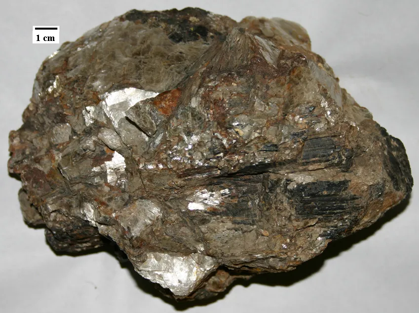
Pegmatitpegmatit Lỗ hổngscoria
Lỗ hổngscoria Thủy tinh dạng bọtđá bọt
Thủy tinh dạng bọtđá bọt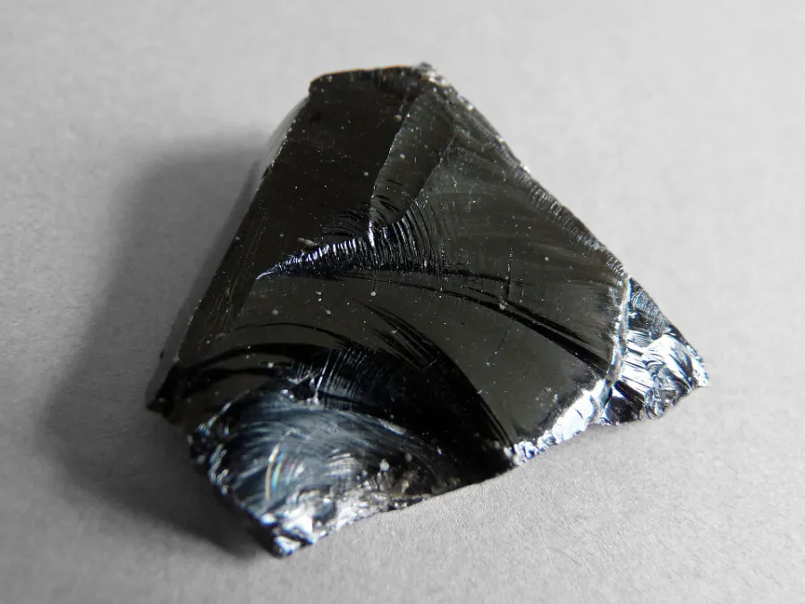
Thủy tinhđá vỏ chai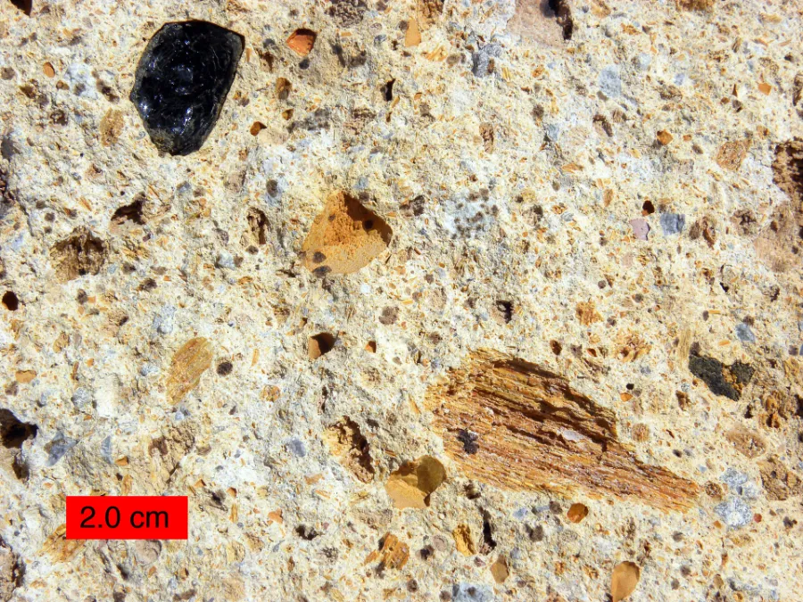
Vụn núi lửatuf hàn kết
| Kiến trúc | Đặc điểm nhìn thấy | Lịch sử nguội |
|---|---|---|
| Hiển tinh | Tinh thể thô, nhìn thấy được | Chậm, sâu dưới lòng đất (xâm nhập) |
| Ẩn tinh | Tinh thể quá nhỏ để thấy | Nhanh, trên hoặc gần bề mặt (phun trào) |
| Porphyr | Ban tinh trong khối nền mịn | Hai giai đoạn: chậm ở sâu, rồi nhanh |
| Pegmatit | Tinh thể rất lớn | Rất chậm, từ dung thể tàn dư |
| Thủy tinh | Không có tinh thể | Cực nhanh (bị tôi) |
| Lỗ hổng | Lỗ khí | Khí thoát ra khi dung nham đông cứng |
| Vụn núi lửa | Tinh thể, mảnh thủy tinh, mảnh đá | Mạt vụn núi lửa từ một vụ phun nổ |
4.1.2 Thành phần
Thành phần được chia thành bốn nhóm khác nhau về lượng silica, sắt và magie. Trong tự nhiên các nhóm này không có ranh giới rõ ràng mà nằm trên một dải liên tục, và các tên đá như granit có định nghĩa khoáng vật chính xác (đá bán dưới tên "granit" có thể thực ra là syenit, tonalit hay monzonit). Bốn nhóm dưới đây là một sơ đồ đơn giản hóa, đủ cho môn học nhập môn.
| Nhóm | Silica | Khoáng vật chính | Màu | Xâm nhập | Phun trào |
|---|---|---|---|---|---|
| 65–75% | Fenspat, thạch anh; ít amphibol, biotit | Sáng | Granit | Rhyolit | |
| 55–60% | Plagioclas, amphibol (sáng và tối gần bằng nhau) | Trung bình | Diorit | Andesit | |
| 45–50% | Pyroxen, olivin, plagioclas | Tối | Gabro | Bazan | |
| ≤ 40% | Chủ yếu olivin, ít pyroxen | Rất tối / lục | Peridotit | Komatiit |
Đá felsic chủ yếu gồm fenspat màu sáng và silica (thạch anh), nghèo sắt và magie. Đá trung tính (intermediate) nằm ở giữa. Đá mafic giàu khoáng vật sắt-magie (Mg và Fe) cùng plagioclas. Đá siêu mafic (ultramafic) hiếm trên bề mặt nhưng tạo nên (peridotite), loại đá của manti trên. Dacit và granodiorit nằm giữa felsic và trung tính. (komatiite) hiếm vì dung nham lên thẳng từ manti không phổ biến; có thể gặp trong các đá Thái cổ.

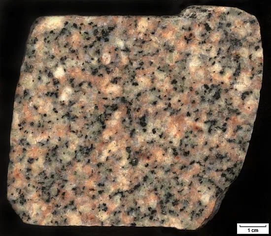
Granitfelsic · hạt thô Diorittrung tính · hạt thô
Diorittrung tính · hạt thô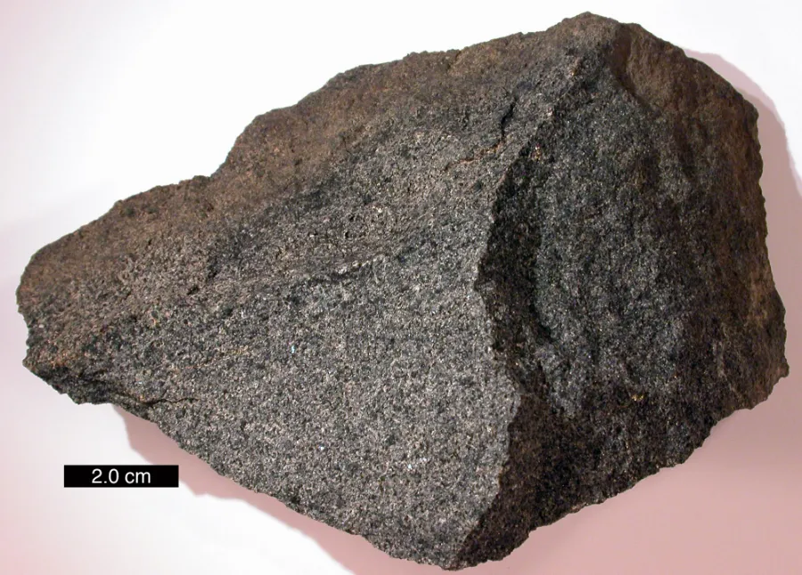
Gabromafic · hạt thô Rhyolitfelsic · hạt mịn
Rhyolitfelsic · hạt mịn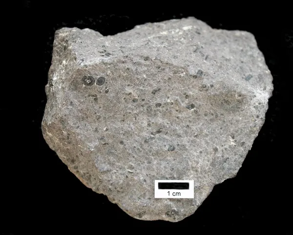
Andesittrung tính · hạt mịn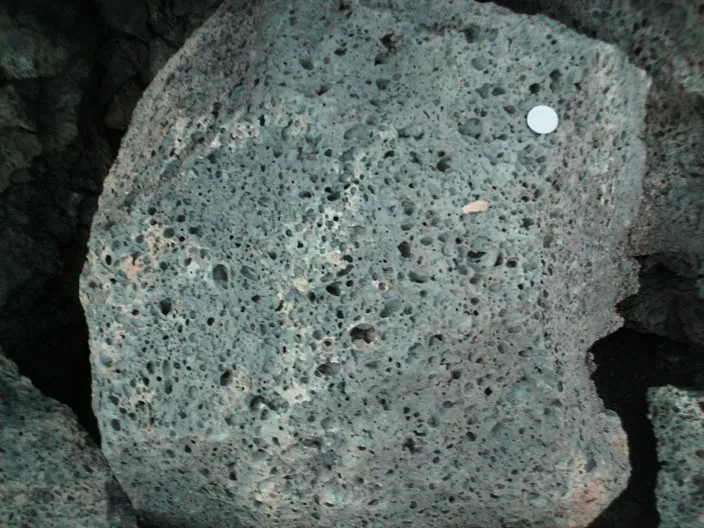
Bazanmafic · hạt mịn (lỗ hổng)
- Granit (granite): đá xâm nhập felsic hạt thô. Thạch anh là dấu hiệu nhận biết tốt; thường có fenspat kali màu hồng cá hồi và plagioclas trắng. Granit xấp xỉ vỏ lục địa cả về tỷ trọng lẫn thành phần.
- Rhyolit (rhyolite): đá phun trào felsic hạt mịn, thường màu hồng với ban tinh thạch anh trong như thủy tinh. Ít gặp hơn granit vì dung nham felsic kém linh động. Ví dụ: các dòng dung nham ở Yellowstone và rhyolit biến đổi tạo nên Grand Canyon of the Yellowstone.
- Diorit (diorite): đá xâm nhập trung tính hạt thô, lốm đốm như chó đốm với hornblend và biotit đen trên nền plagioclas trắng. Gặp ở dãy Andes và các dãy Henry, Abajo ở Utah.
- Andesit (andesite): đá phun trào trung tính hạt mịn, thường xám và có kiến trúc porphyr; gặp ở dãy Andes và một số cung đảo (Học phần 2).
- Gabro (gabbro): đá xâm nhập mafic hạt thô, chủ yếu là pyroxen với ít plagioclas; là thành phần chính của phần dưới vỏ đại dương.
- Bazan (basalt): đá phun trào mafic hạt mịn, thường có lỗ hổng, có ban tinh olivin hoặc plagioclas khi ở dạng porphyr. Hình thành ở sống núi giữa đại dương, bazan tạo nên toàn bộ đáy đại dương (dưới lớp trầm tích) và là loại đá phổ biến nhất trên bề mặt Trái Đất.
4.1.3 Các thể đá magma
Điều đáng ngạc nhiên là đá xâm nhập phổ biến hơn trong hồ sơ địa chất. Đá phun trào, với tinh thể nhỏ và thủy tinh, kém bền và bị phơi ra cho xói mòn ngay lập tức, còn đá xâm nhập hình thành dưới lòng đất với tinh thể lớn, chắc hơn. Vì vậy phần lớn địa hình magma là các thể xâm nhập; núi lửa đang hoạt động là ngoại lệ chính. Đá cũ hơn có sẵn mà magma xâm nhập vào gọi là (country rock).
- (đai mạch; dike) hình thành khi magma lấp đầy một khe nứt rồi đông cứng. Nó cắt ngang các lớp, thường thẳng đứng hoặc xiên, nên là thể xâm nhập (discordant). Thể tường trẻ hơn các đá mà nó cắt qua, nên định tuổi nó giúp gán tuổi tuyệt đối cho các loạt trầm tích (Học phần 7).
- (sill) hình thành khi magma len vào giữa các lớp và đẩy chúng tách ra. Nó song song với các lớp nên là thể xâm nhập (concordant); nó cũng trẻ hơn các lớp xung quanh.
- (buồng magma; magma chamber) là bể chứa đá nóng chảy lớn dưới lòng đất. Đường đi của magma trồi lên là . Cách diapir tạo chỗ trống vẫn còn tranh luận: đá vây quanh có thể bị đẩy sang bên, hoặc bị nóng chảy và hấp thụ, hoặc vỡ thành mảnh chìm vào magma (; stoping); hoặc "diapir" thực ra là nhiều thể tường hợp lại qua hàng triệu năm.
- Diapir nguội đi trở thành một , thường gần tròn. Nhiều pluton hợp lại tạo thành (batholith): thường rộng trên 100 km², gắn với đới hút chìm, chủ yếu felsic, và nằm ở lõi các dãy núi như Sierra Nevada. (stock) là pluton lộ trên mặt ít hơn, có thể là phần cổ hẹp nhô lên từ thể nền. Thể nền và thể cán đều bất chỉnh hợp.
- (laccolith) là thể xâm nhập chỉnh hợp dạng bọng, đẩy các lớp phía trên phồng lên, như dãy núi Henry ở Utah. Thể tương tự nhưng võng xuống dưới là (lopolith).
| Thể | Hình dạng | Quan hệ với các lớp | Ví dụ |
|---|---|---|---|
| Thể tường | Tấm lấp đầy khe nứt | Bất chỉnh hợp (cắt ngang) | Thể tường gabro olivin, đảo Baffin |
| Thể vỉa | Tấm nằm giữa các lớp | Chỉnh hợp (song song) | Horton Bluff, Nova Scotia |
| Thể nấm | Bọng phồng lên | Chỉnh hợp | Dãy núi Henry, Utah |
| Thể chậu | Võng xuống | Chỉnh hợp | – |
| Thể cán | Pluton nhỏ, lộ ít | Bất chỉnh hợp | Thể cán Little Cottonwood, Utah |
| Thể nền | Nhiều pluton hợp lại, > 100 km² | Bất chỉnh hợp | Thể nền Sierra Nevada (Yosemite) |

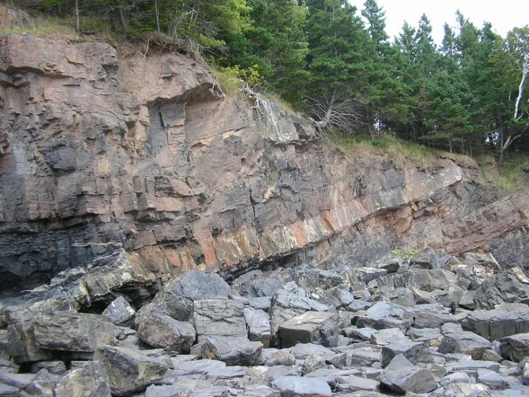
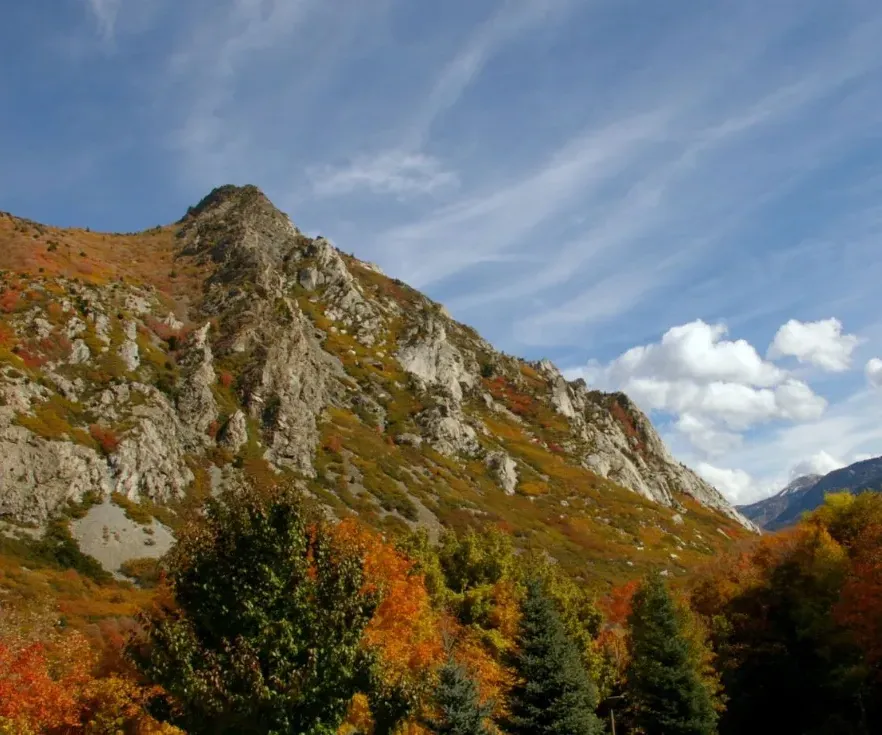
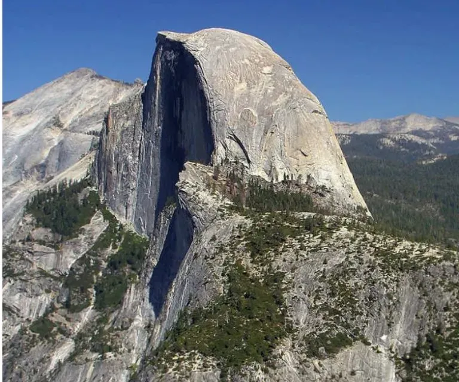

Tự kiểm tra: Bài kiểm tra mục 4.1 trong giáo trình (tiếng Anh) ↗
4.2Chuỗi phản ứng Bowen
(Bowen's Reaction Series) mô tả nhiệt độ mà các khoáng vật kết tinh khi magma nguội, hoặc nóng chảy khi đá bị nung nóng. Ở áp suất mực nước biển (1 bar), mọi khoáng vật đều rắn dưới khoảng 700 °C (1.292 °F) và đều nóng chảy trên khoảng 1.250 °C (2.282 °F). Ở dưới sâu các con số thay đổi vì áp suất ảnh hưởng đến điểm nóng chảy (Mục 4.3), nhưng thứ tự vẫn giữ nguyên.
Đọc sơ đồ từ trên xuống như quá trình nguội. Các nhóm đá bên phải đi từ siêu mafic đến felsic. Đi xuống, silic, natri, nhôm và kali tăng; đi lên, các thành phần sắt-magie là sắt, magie và canxi tăng.

Các thí nghiệm của Bowen
Norman L. Bowen (1887–1956) nhận thấy một số khoáng vật luôn đi cùng nhau trong đá magma và loại trừ các khoáng vật khác. Nghi ngờ nguyên nhân là nhiệt độ nguội, ông nghiền đá thành bột, hàn kín trong các ống kim loại, nung đến nhiều nhiệt độ khác nhau rồi tôi nhanh. Dưới kính hiển vi thạch học, ông thấy tinh thể nằm trong thủy tinh, và nhận ra các khoáng vật kết tinh ở những nhiệt độ khác nhau và đi cùng những khoáng vật có khoảng nhiệt độ tương tự.
Điều này giải thích vì sao đá mafic kết tinh ở nhiệt độ cao hơn đá felsic: dung nham felsic phun ra nguội hơn dung nham mafic hàng trăm độ. Công trình của ông đặt nền móng cho (petrology) đá magma hiện đại và dẫn đến cuốn sách The Evolution of the Igneous Rocks (1928).
Tự kiểm tra: Bài kiểm tra mục 4.2 trong giáo trình (tiếng Anh) ↗
4.3Sự sinh thành magma
Magma và dung nham có ba thành phần: dung thể (melt; các ion từ khoáng vật đã hóa lỏng), pha rắn (các tinh thể trôi nổi trong dung thể) và chất bốc (các khí hòa tan như hơi nước, cacbon dioxit, lưu huỳnh và clo). Lượng của mỗi thành phần quyết định cách magma vận động.
4.3.1 Gradien địa nhiệt
Nhiệt độ tăng theo độ sâu do nhiệt còn sót lại từ thời Trái Đất hình thành và do phân rã phóng xạ đang diễn ra. Tốc độ tăng này là (geothermal gradient; biểu diễn bằng đường địa nhiệt): khoảng 25 °C mỗi km trong 100 km trên cùng. Nhiệt độ đạt khoảng 1.200 °C ở độ sâu 100 km. Áp suất cũng tăng: khoảng 10.000 bar ở đáy vỏ (35 km), trong đó 1 là áp suất khí quyển bình thường ở mực nước biển.
Trên đồ thị độ sâu - nhiệt độ, (solidus) đánh dấu nơi đá bắt đầu nóng chảy. Đá ở phía lạnh là rắn; đá vượt qua đường này bắt đầu nóng chảy. Đường solidus nghiêng vì áp suất cao làm tăng nhiệt độ nóng chảy (tương tự, nước sôi dưới 100 °C khi áp suất giảm). Bình thường đường địa nhiệt luôn ở phía rắn cho đến tận ranh giới nhân - manti ở độ sâu 2.880 km; hai đường gần nhau nhất ở khoảng 125 km. Vì magma là hỗn hợp các khoáng vật có điểm nóng chảy khác nhau (Mục 4.2), đường solidus thực chất là một đới mờ, nơi một số khoáng vật nóng chảy còn số khác vẫn rắn: (partial melting).
| Kiểu | Yếu tố thay đổi | Bối cảnh | Đồ thị |
|---|---|---|---|
| Nóng chảy do giảm áp | Áp suất giảm khi đá nóng trồi lên | Sống núi giữa đại dương, đới tách giãn lục địa | B |
| Nóng chảy do chất lưu | Chất bốc (nước) làm hạ điểm nóng chảy | Đới hút chìm, cung đảo | D |
| Nóng chảy do gia nhiệt | Nhiệt độ tăng (ít gặp nhất) | Chùm manti / điểm nóng (kèm một phần giảm áp) | C |
4.3.2 Nóng chảy do giảm áp
(decompression melting) tạo ra magma ở sống núi giữa đại dương. Đối lưu khiến quyển mềm rắn chảy chậm bên dưới thạch quyển. Nơi đá manti trồi lên, nhiệt độ gần như giữ nguyên nhưng áp suất giảm, làm hạ điểm nóng chảy. Đá vượt qua đường solidus (đồ thị B) và nóng chảy từng phần bắt đầu. Magma đi lên, nguội đi và kết tinh thành thạch quyển mới.
4.3.3 Nóng chảy do chất lưu
(flux melting, fluid-induced melting) xảy ra ở đới hút chìm và cung đảo, nuôi nhiều núi lửa thuộc Thái Bình Dương (Ring of Fire). Phiến hút chìm chứa các khoáng vật ngậm nước (nước liên kết vào cấu trúc silicat, Học phần 2). Khi bị nung nóng trong manti, chúng giải phóng hơi nước và các chất bốc khác, bị ép ra như nước vắt từ miếng bọt biển. Chất bốc hòa tan vào quyển mềm phía trên và làm hạ điểm nóng chảy của nó. Áp suất và nhiệt độ không đổi; chính đường solidus dịch chuyển (đồ thị D). Hiện tượng này giống như rắc muối lên mặt đường đóng băng: muối hạ điểm đông đặc nên băng tan ra.
4.3.4 Nóng chảy do gia nhiệt
(heat-induced melting), tức đơn giản là cấp thêm nhiệt, là cách tạo magma ít gặp nhất. Nó xảy ra ở các (mantle plume, điểm nóng): đá quanh chùm bị nung nóng vượt qua đường solidus (đồ thị C), và vì vật chất của chùm đang trồi lên nên cũng có một phần nóng chảy do giảm áp. Biến chất khu vực mạnh (Học phần 6) cũng có thể tạo ra một ít magma, hình thành loại đá lai biến chất - magma gọi là (migmatite).
Tự kiểm tra: Bài kiểm tra mục 4.3 trong giáo trình (tiếng Anh) ↗
4.4Nóng chảy từng phần và kết tinh
Mọi magma đều có nguồn gốc từ đá manti tương tự nhau, vậy mà đá magma lại rất đa dạng. Nóng chảy từng phần và các quá trình kết tinh làm thay đổi hóa học của magma trên đường đi.
4.4.1 Nóng chảy từng phần
Manti gồm nhiều khoáng vật nên không nóng chảy đồng đều: các khoáng vật có điểm nóng chảy thấp hóa lỏng trong khi các khoáng vật có điểm nóng chảy cao vẫn rắn. Nóng chảy từng phần như vậy tạo ra magma có thành phần khác với đá nguồn.
- Từ manti. Peridotit của manti là siêu mafic: nghèo silica, giàu sắt và magie. Phần giàu silica của nó nóng chảy trước, nên manti siêu mafic sinh ra magma mafic (và đá nguồn mafic sinh ra magma trung tính). Magma đi lên vì nó nổi hơn manti.
- Từ vỏ. Nhiệt từ magma có thể làm nóng chảy đá vỏ sẵn có, cho magma felsic hơn đá ban đầu. Thuở sơ khai của Trái Đất, các magma giàu silica như vậy trồi lên và đông cứng thành các lục địa granit; phần lõi cổ của chúng là các (shield).
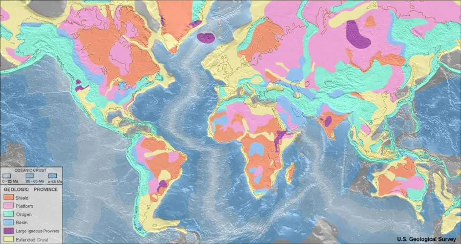
4.4.2 Kết tinh và phân dị magma
Magma lỏng nhẹ hơn đá rắn xung quanh nên nó trồi lên. Khi nguội và kết tinh, quá trình (magmatic differentiation) đưa hóa học của nó về thành phần felsic hơn, chủ yếu qua hai quá trình.
1. Đồng hóa. Trong quá trình (assimilation), các mảnh đá vây quanh, thường felsic hơn, được thêm vào magma và có thể nóng chảy vào đó. Các mảnh chưa nóng chảy là (xenolith). Thể tù cũng hình thành khi (magma mixing; hai magma gặp nhau, đôi khi trộn không đều) và khi (rejuvenation; một khối đã đông cứng bị nóng chảy lại). Vỏ lục địa felsic và dày, nên magma mafic trồi lên qua nó rất chậm, đồng hóa đá felsic và lên tới nơi dưới dạng magma trung tính hoặc felsic. Đó là lý do magma felsic phổ biến hơn nhiều bên trong lục địa.
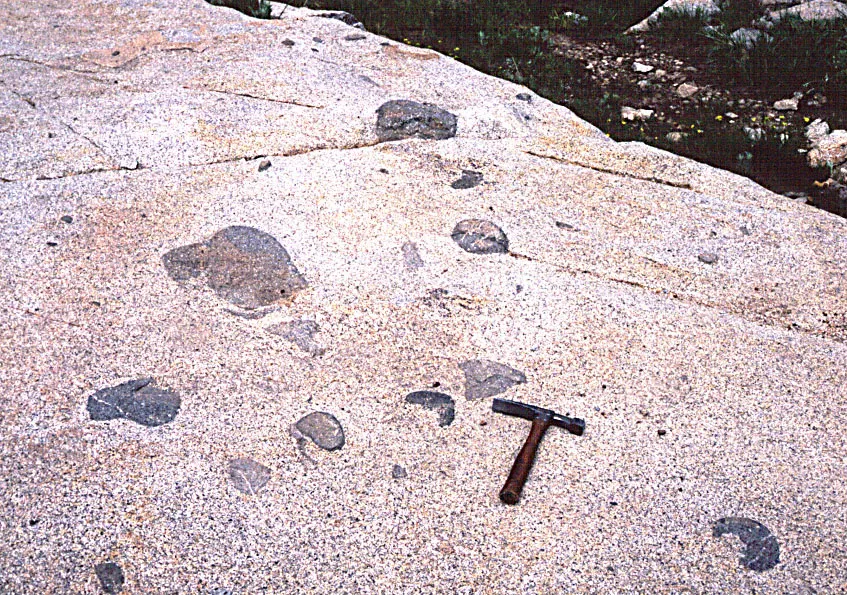
2. Kết tinh phân đoạn. Trong (fractional crystallization, fractionation), các khoáng vật kết tinh khi magma nguội và lắng xuống đáy lò, lấy đi các ion của chúng khỏi dung thể. Olivin, đứng đầu chuỗi Bowen, kết tinh trước tiên và chứa ít silica hơn các khoáng vật magma phổ biến khác, nên khi nó bị tách ra, dung thể còn lại giàu silica hơn. Tiếp theo là pyroxen và plagioclas, làm dung thể càng felsic hơn. Kết tinh phân đoạn cũng xảy ra trong thạch quyển đại dương, nhưng magma felsic tiến hóa cao chủ yếu hình thành trong lục địa, nơi chặng đường lên bề mặt dài hơn cho phép quá trình này diễn ra nhiều hơn.
Tự kiểm tra: Bài kiểm tra mục 4.4 trong giáo trình (tiếng Anh) ↗
4.5Hoạt động núi lửa
(volcano) là dạng địa hình hình thành khi dung nham đông cứng thành đá. Kiến tạo mảng đã giúp núi lửa bớt bí ẩn đi nhiều; mục này trình bày vị trí, các kiểu, hiểm họa và cách giám sát núi lửa.
4.5.1 Phân bố và kiến tạo
Phần lớn núi lửa là (interplate volcano; "inter" = giữa), nằm trên các ranh giới mảng đang hoạt động: sống núi giữa đại dương, đới hút chìm và đới tách giãn lục địa. (intraplate volcano; "intra" = bên trong) nằm trong lòng mảng, xa ranh giới; nhiều núi lửa loại này hình thành trên điểm nóng.

| Bối cảnh | Loại | Nóng chảy | Magma | Ví dụ |
|---|---|---|---|---|
| Sống núi giữa đại dương | Ranh giới mảng | Giảm áp | Bazan | Đáy đại dương, Iceland |
| Đới hút chìm | Ranh giới mảng | Chất lưu, rồi phân dị | Trung tính đến felsic | Vành đai lửa |
| Đới tách giãn lục địa / vỏ mỏng đi | Ranh giới mảng | Giảm áp | Bazan | Tách giãn Đông Phi, Basin and Range |
| Điểm nóng | Nội mảng | Gia nhiệt + giảm áp | Bazan ở đại dương; có thể thành trung tính hoặc felsic dưới lục địa | Hawaii, Yellowstone |
Sống núi giữa đại dương
Phần lớn hoạt động núi lửa trên Trái Đất diễn ra dọc các sống núi giữa đại dương, một kiểu ranh giới phân kỳ (Học phần 2). Đây là những vụ phun trào ít được quan sát nhất: hầu hết nằm dưới 3.000–4.500 m nước và diễn ra chậm, êm, rỉ ra (Iceland là ngoại lệ). Các mảng mỏng dần cho phép manti nóng trồi lên và giảm áp; peridotit nóng chảy từng phần thành magma bazan. Vì vậy gần như mọi núi lửa đáy biển đều là bazan, và thạch quyển đại dương gồm bazan ở gần mặt, bên dưới là gabro và peridotit. Dưới nước, bazan phun ra thành những vụ nổ nhỏ hoặc thành các khối tròn gọi là (pillow basalt).


Sự sống không cần ánh sáng
Các vụ phun trào đáy biển nuôi dưỡng cả những hệ sinh thái. Chúng tập trung quanh các ống khói đen (black smoker), tức sâu (hydrothermal vent): những ống cao tuôn ra nước đen, nóng, giàu khoáng.
Không có ánh sáng để quang hợp, các quần xã này dựa vào (chemosynthesis): vi khuẩn biến hydro sulfua (H2S, mùi trứng thối) thành chất dinh dưỡng và nước. Động vật lớn hơn ăn vi khuẩn hoặc nuôi chúng bên trong cơ thể.
Đới hút chìm
Bối cảnh phổ biến thứ hai là cạnh các đới hút chìm, một kiểu ranh giới hội tụ. Nước từ phiến đang chìm gây nóng chảy do chất lưu; trong cung núi lửa, vỏ dày lên thúc đẩy nóng chảy từng phần và phân dị, biến magma mafic từ manti thành magma giàu silica. Vành đai lửa chủ yếu có các vụ phun trào giàu silica, và núi lửa cùng các pluton ở đây phần lớn là đá trung tính đến felsic như andesit, rhyolit, đá bọt và tuf.
Đới tách giãn lục địa
Núi lửa cũng hình thành ở đới tách giãn lục địa, nơi các mảng phân kỳ làm vỏ mỏng đi (Tách giãn Đông Phi), và ở nơi vỏ mỏng đi mà không tách giãn, như vùng Basin and Range ở Bắc Mỹ. Vật chất vỏ dưới hoặc manti trên trồi lên qua lớp vỏ mỏng, giảm áp, nóng chảy từng phần và phun ra thành dung nham bazan, thường dưới dạng bazan lũ, nón tro xỉ và các dòng dung nham. Trường núi lửa Black Rock Desert ở Utah bắt đầu phun khoảng 6 triệu năm trước; lần phun gần nhất cách đây 720 năm.

Điểm nóng
(hotspot) là nguồn chính của núi lửa nội mảng. Một mảng trượt trên một chùm manti, tức cột đá rắn nóng trồi lên từ sâu trong manti. Vật chất trồi lên bị nóng chảy, và nơi magma gặp thạch quyển, nó lan ra thành một đầu hình nấm rộng hàng chục đến hàng trăm kilômét. Phần lớn chùm manti nằm dưới mảng đại dương, nên núi lửa bắt đầu dưới nước và có thể bồi đắp thành đảo, như Hawaii. Dưới lục địa, magma mafic nóng có thể làm nóng chảy vỏ felsic và trộn lẫn thành magma trung tính, hoặc magma felsic có thể đi lên tạo thể nền granit hay một núi lửa felsic bùng nổ, như Yellowstone.
Một núi lửa đang hoạt động ở đầu một chuỗi núi lửa đã tắt là dấu hiệu của điểm nóng: mảng đã mang các núi lửa cũ hơn đi xa. Quần đảo Hawaii là đầu đang hoạt động của chuỗi Hawaii - Emperor, kéo dài tới đới hút chìm ngoài khơi Kamchatka; chuyển động của mảng Bắc Mỹ để lại một dãy caldera từ tây nam Idaho đến Yellowstone. Xem bản đồ ở Học phần 2, Mục 2.7.
4.5.2 Cấu tạo và các kiểu núi lửa
Núi lửa được phân loại theo hình dạng, kiểu phun trào, thành phần magma và các yếu tố khác. Các bộ phận chính được minh họa dưới đây bằng một núi lửa dạng tầng.
- (họng núi lửa; conduit) là ống hẹp đưa magma từ lò lên (vent); hố hình chảo trên đỉnh là (crater), viền quanh bởi vành miệng.
- (parasitic cone) là núi lửa nhỏ trên sườn một núi lửa lớn hơn, như Shastina trên núi Shasta. Kīlauea, nằm trên sườn Mauna Loa, không phải nón ký sinh vì có lò magma riêng.
- Các miệng núi lửa lớn nhất là (hõm chảo núi lửa), như hồ Crater, Oregon.
Độ nhớt là chìa khóa
Nhiều đặc điểm núi lửa phụ thuộc vào (viscosity), tức sức cản chảy của chất lưu. Magma độ nhớt thấp chảy dễ như xi-rô: dung nham bazan của các núi lửa hình khiên ở Hawaii. Magma độ nhớt cao, thường là felsic hoặc trung tính, đặc quánh và chảy chậm như kem đánh răng. Càng nhiều silica và nhiệt độ càng thấp thì độ nhớt càng cao, giữ khí lại và làm phun trào bùng nổ hơn.
| Kiểu | Hình dạng | Magma | Kiểu phun | Ví dụ |
|---|---|---|---|---|
| Hình khiên | Lớn nhất; sườn rộng, thoải | Mafic (bazan), độ nhớt thấp | Phun trào tràn: nhỏ, cục bộ, dự đoán được | Mauna Loa, Kīlauea, Olympus Mons |
| Núi lửa dạng tầng (hỗn hợp) | Nón dốc, cân đối; miệng rõ | Trung tính đến felsic (đôi khi mafic) | Dòng nhớt và vòm, phun nổ | Núi Rainier, núi Phú Sĩ |
| Vòm dung nham | Gò dạng khối gần miệng phun | Felsic (rhyolit, đá vỏ chai), rất nhớt | Lớn lên do giãn nở bên trong | Vòm núi St. Helens, Chaitén, núi Mammoth |
| Caldera | Lòng chảo vách dốc, rộng tới 25 km | Felsic, nhiều chất bốc | Phun nổ khổng lồ, rồi sụp đổ | Hồ Crater, Yellowstone, Long Valley |
| Nón tro xỉ | Nhỏ, dốc, một miệng phun trung tâm | Mafic, nhiều chất bốc | Ngắn ngủi; xỉ trước, dung nham từ chân sau | Sunset Crater, Parícutin |
| Bazan lũ | Cao nguyên dung nham mênh mông | Mafic, độ nhớt thấp nhất | Chưa từng được quan sát trong lịch sử loài người | Columbia River, Deccan, Siberia |
| Carbonatit | – | Carbonat (> 50% khoáng vật carbonat), độ nhớt thấp, nguội | Dung nham đen, phong hóa thành trắng | Ol Doinyo Lengai (duy nhất còn hoạt động) |
Núi lửa hình khiên
(shield volcano) là những núi lửa lớn nhất. Sườn rộng và thoải, được đặt tên vì giống tấm khiên của chiến binh, được bồi đắp từ rất nhiều dòng bazan độ nhớt thấp chảy lan xa. Chúng có miệng phun nhỏ trên đỉnh và lò magma mafic, gắn với điểm nóng, sống núi giữa đại dương hoặc đới tách giãn, và phun theo kiểu (effusive): các vụ phun nhỏ, cục bộ, dự đoán được. Chúng hiếm khi đe dọa tính mạng, dù vụ phun không bùng nổ năm 2018 của Kīlauea tạo ra các dòng dung nham lớn bất thường làm hư hại đường sá và nhà cửa. Núi lửa hình khiên cũng có ở Iceland, Galápagos, Bắc California, Oregon và Tách giãn Đông Phi.


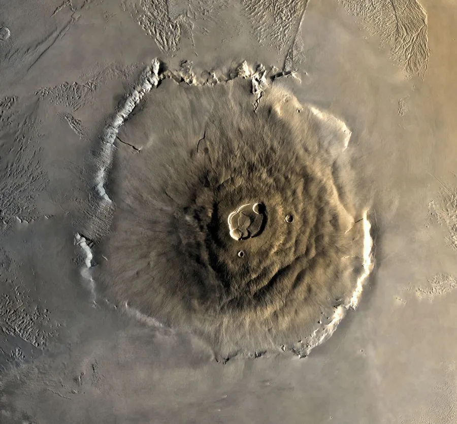
Dung nham bazan tạo hai kiểu dòng chính, đều mang tên tiếng Hawaii. có thể hình thành từ dung nham độ nhớt thấp chảy dễ thành những sợi như dây thừng. (đọc "a-a") nhớt hơn, bề mặt vụn và dạng khối; dung nham felsic, nguội hơn và giàu silica hơn, cũng tạo dòng kiểu ʻaʻā. Điều gì tạo ra mỗi kiểu vẫn còn đang tranh luận.

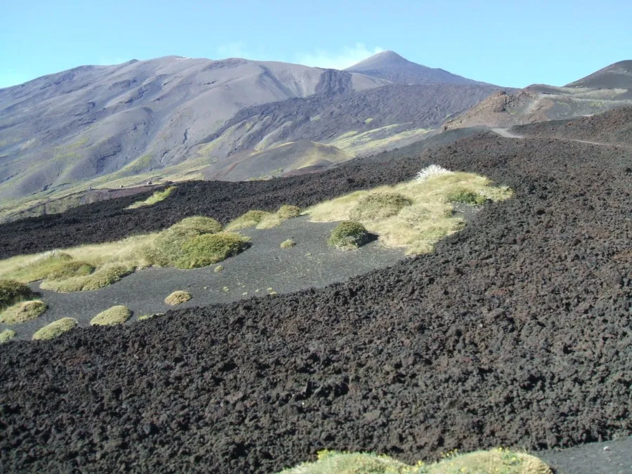
Dung nham loãng, chảy nhanh có thể cứng lại ở mặt ngoài nhưng vẫn chảy bên trong; khi dòng chảy cạn, lớp vỏ rỗng còn lại là (lava tube). Các ống dung nham, còn nguyên hay đã sập mái, tạo thành hang động ở Hawaii, Bắc California, cao nguyên Columbia River, El Malpais (New Mexico) và Craters of the Moon (Idaho). (fissure) là các vết nứt, thường gặp trong kiểu phun hình khiên, tuôn ra dung nham mafic rất loãng; một số do động đất núi lửa gây ra, số khác chạy theo ranh giới mảng, như ở Iceland.

Dung nham khi nguội có thể co lại thành các cột có tiết diện gần lục giác, gọi là (columnar jointing). Ví dụ nổi tiếng là Devils Tower, Wyoming (có thể là một họng núi lửa cổ lộ ra do xói mòn) và Giant's Causeway, Ireland.

Núi lửa dạng tầng
(stratovolcano), hay núi lửa hỗn hợp (composite cone), có sườn dốc, nón cân đối, miệng rõ và nhô cao hẳn trên cảnh quan xung quanh. "Hỗn hợp" chỉ các lớp xen kẽ của mảnh vụn núi lửa (tro, bom) và dung nham đông cứng có thành phần khác nhau. Núi lửa dạng tầng thường có lò magma felsic đến trung tính (đôi khi có dung nham mafic); các dòng nhớt và vòm dung nham xen với những vụ phun nổ tạo nên sườn dốc.

Vòm dung nham
(lava dome) là đống đá giàu silica như rhyolit và obsidian. Dung nham felsic quá nhớt để chảy xa nên chất đống thành khối gần miệng phun và lớn lên nhờ giãn nở bên trong; lớp ngoài nguội, cứng lại, vỡ vụn và rơi xuống hai bên. Vòm thường mọc trong miệng sụp của một núi lửa dạng tầng, như ở núi St. Helens; Chaitén (Chile) và núi Mammoth (California) là các vòm độc lập.
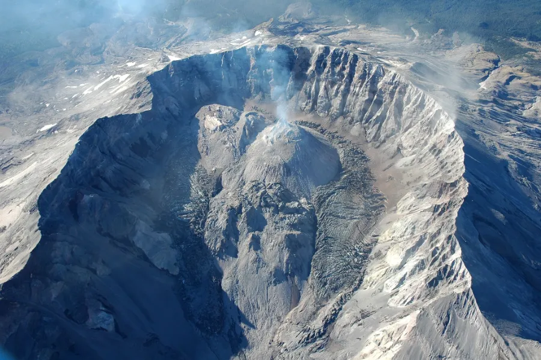
Caldera
Caldera là lòng chảo vách dốc hình thành khi núi lửa sụp vào lò magma đã trống. Caldera thường rất lớn (chương nói đường kính tới 25 km). Thuật ngữ này vốn chỉ một miệng phun nhưng thường được dùng như một kiểu núi lửa. Núi lửa caldera thường hình thành từ các vụ phun dung nham felsic độ nhớt cao, giàu chất bốc.
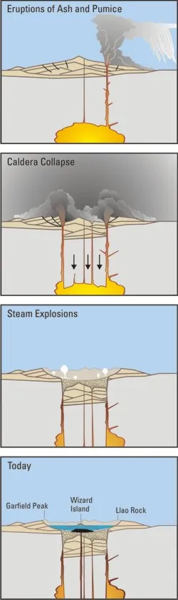
Ba ví dụ về caldera
- Hồ Crater, Oregon. Núi Mazama, một núi lửa hỗn hợp, phun nổ dữ dội, phóng ra tro và làm cạn lò magma; đỉnh núi sụp thành một lòng chảo về sau đầy nước. Đảo Wizard là một vòm dung nham tái sinh hình thành sau đó.
- Yellowstone. Các vụ phun khổng lồ cách đây 2,1; 1,3 và 0,64 triệu năm để lại ba caldera, các dòng rhyolit và tuf. Caldera trẻ nhất chứa phần lớn công viên và hai vòm tái sinh. Vệt điểm nóng bắt đầu khoảng 17 triệu năm trước gần ranh giới Oregon - Nevada và băng qua đồng bằng sông Snake ở Idaho.
- Long Valley, California. Một vụ phun lớn cách đây 760.000 năm rải tro khắp nước Mỹ và tạo nên tuf Bishop. Caldera rộng 17 × 32 km, đủ chứa thị trấn Mammoth Lakes và một khu trượt tuyết.


Nón tro xỉ
(cinder cone) là núi lửa nhỏ, dốc, được tạo từ các mảnh vụn núi lửa phóng ra từ một miệng phun trung tâm. Mảnh nhỏ là (cinders); mảnh lớn nhất là bom núi lửa. Các đợt phun ngắn ngủi, thường là dung nham mafic giàu chất bốc, đông cứng ngay trên không và chất đống trên sườn. Chúng phổ biến khắp miền tây Bắc Mỹ.
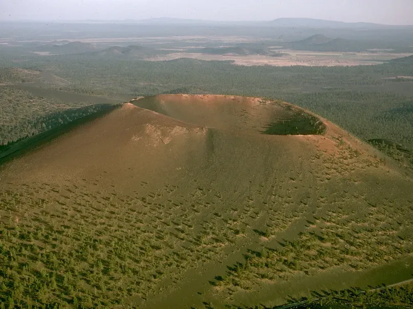


Parícutin, Mexico (1943)
Một nón tro xỉ bắt đầu phun xỉ lên từ cánh đồng của một nông dân. Nó cao hơn 90 m (300 ft) chỉ trong một tuần và 365 m (1.200 ft) trong 8 tháng. Qua chín năm, tro phủ khoảng 260 km² và thị trấn San Juan bị phá hủy.
Trình tự điển hình của nón tro xỉ:
- Phun dữ dội khí và xỉ.
- Nón và miệng được bồi đắp.
- Dung nham độ nhớt thấp tuôn ra gần chân nón, vì nón xốp không giữ nổi một cột dung nham lên tới miệng.
Bazan lũ
(flood basalt) là một trong những kiểu phun lớn nhất và có độ nhớt thấp nhất từng biết, nhưng chưa từng xảy ra trong lịch sử loài người, nên cơ chế phun vẫn chưa rõ. Ví dụ: bazan Columbia River (Washington, Oregon, Idaho), bẫy Deccan ở Ấn Độ và bẫy Siberia, có thể liên quan đến đợt tuyệt chủng hàng loạt lớn nhất của Trái Đất (Học phần 8).
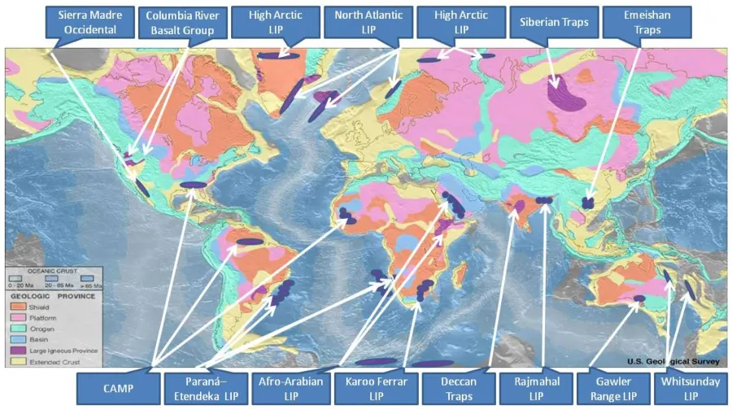
Carbonatit
Kiểu núi lửa kỳ lạ nhất là (carbonatite). Mọi kiểu núi lửa khác đều từ magma silicat; carbonatit đến từ magma carbonat và tạo ra đá có hơn 50% khoáng vật carbonat. Dung nham có độ nhớt rất thấp và tương đối nguội, phun ra màu đen, chuyển nâu xám rồi cuối cùng thành trắng. Ví dụ duy nhất đang hoạt động là Ol Doinyo Lengai ở đới Tách giãn Đông Phi, Tanzania. Carbonatit chủ yếu gắn với tách giãn lục địa, và các carbonatit cổ phải được nghiên cứu kỹ để phân biệt với đá hoa biến chất (Học phần 6).

4.5.3 Hiểm họa núi lửa và giám sát
Dung nham là hiểm họa dễ thấy nhất, nhưng mối nguy hiểm vượt xa các dòng dung nham.
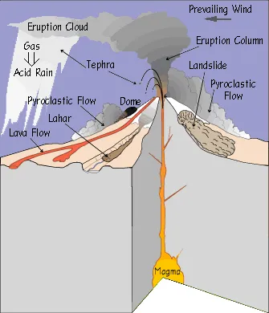
Các hiểm họa trong mục này
- Luồng mạt vụn núi lửa (nguy hiểm nhất)
- Sạt lở và sóng thần do sạt lở
- Mạt vụn núi lửa và tro rơi
- Khí núi lửa, gồm cả phun trào limnic
- Lahar (dòng bùn núi lửa)
- Dòng dung nham
Núi St. Helens, ngày 18/5/1980. Một trận động đất gây ra vụ sạt lở "mở nút" ngọn núi, cuốn đi 400 m (1.300 ft) phần đỉnh. Tiếp theo là một vụ nổ ngang, và một luồng mạt vụn núi lửa di chuyển 80–130 km/h phủ tro nóng và mảnh vụn lên gần 600 km² rừng, quật ngã cây cối. Vụ phun làm 57 người thiệt mạng.


Vesuvius, năm 79. Núi Vesuvius gần Naples, Ý, đã đưa một luồng mạt vụn núi lửa tràn qua các thành phố La Mã Herculaneum và Pompeii, được phát hiện lại vào thế kỷ 18. Pompeii còn lưu giữ khuôn hình những người chết ngạt vì tro và bị vùi dưới khoảng 3 m (10 ft) tro, sỏi núi lửa đá bọt và mái nhà sập.
Luồng mạt vụn núi lửa
(dòng pyroclastic; pyroclastic flow) là hiểm họa núi lửa nguy hiểm nhất: những đám mây xoáy gồm khối dung nham, đá bọt, tro và khí nóng 200–700 °C lao xuống sườn dốc với tốc độ tới 193 km/h (120 mph). Chúng đặc trưng cho các núi lửa bùng nổ, giàu silica, độ nhớt cao như núi lửa hỗn hợp, và trầm tích của chúng tạo nên tuf và tuf hàn kết.

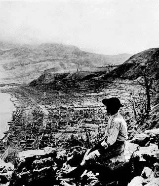
Các luồng mạt vụn núi lửa chết người (theo chương)
- 1902, núi Pelée, Martinique: phá hủy St. Pierre, làm 28.000 người chết trong chốc lát.
- Đầu thập niên 1990, núi Unzen, Nhật Bản: nhiều dòng liên tiếp; một dòng được quay phim đã làm 41 người chết.
- 2014, núi Ontake, Nhật Bản: magma đun nóng nước ngầm thành hơi, phóng ra tro và bom núi lửa; 47 người chết do khí độc, tro nóng hoặc bom.
Xem ghi chú kiểm chứng để biết số người chết đã cập nhật.
Sạt lở và sóng thần
Sườn dốc, kém ổn định có thể đổ sụp thành sạt lở do magma di chuyển, vụ nổ, động đất lớn hoặc mưa lớn. Vụ sạt lở ở núi St. Helens năm 1980 di chuyển 160–290 km/h (100–180 mph). Sạt lở đổ xuống biển có thể gây sóng thần: năm 1792, sạt lở từ núi Unzen gây sóng thần làm 15.000 người chết; vụ phun Krakatau năm 1883 ở Indonesia tạo sóng cao 40 m (131 ft), làm 36.000 người chết và phá hủy 165 làng.
Mạt vụn núi lửa
Núi lửa, nhất là núi lửa hỗn hợp, phóng ra lượng lớn tephra. Mảnh lớn, nặng rơi gần miệng phun (khối và bom đã giết người ở Ontake), còn tro mịn (< 2 mm) bay rất xa. Tro dày có thể làm sập nhà; hít phải có thể gây bệnh phổi như (silicosis); và nó phá hỏng động cơ máy bay lẫn ô tô. Năm 2010, đám mây tro từ núi Eyjafjallajökull, Iceland, gây ra đợt gián đoạn hàng không lớn nhất ở Bắc Âu kể từ Thế chiến II, khiến kinh tế thế giới thiệt hại hàng tỷ đô la, dù không ai bị thương.
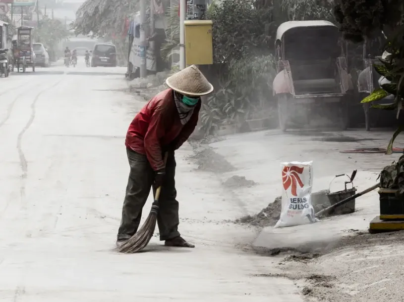

Khí núi lửa
Khi magma đi lên và áp suất giảm, khí hòa tan thoát ra: cacbon dioxit (CO2), lưu huỳnh dioxit (SO2), hydro sulfua (H2S) và các hydro halogenua (HF, HCl, HBr). Ngay cả núi lửa không phun cũng có thể thải ra chúng. CO2 không màu, không mùi, chìm xuống và tích tụ ở chỗ trũng: năm 2006, ba nhân viên tuần tra trượt tuyết chết ngạt sau khi rơi xuống một hố tuyết gần một (fumarole) ở núi Mammoth, bên trong caldera Long Valley.
Phun trào limnic
(limnic eruption; tiếng Hy Lạp limne là hồ) là sự giải phóng khí đột ngột từ một hồ miệng núi lửa bão hòa khí hòa tan, xảy ra khi sạt lở hoặc động đất làm xáo động nước, giống như mở một chai nước ngọt đã lắc mạnh. Năm 1986 tại hồ Nyos, Cameroon, một lượng lớn CO2 thoát ra đã làm gần 2.000 người chết.
Lahar
(một từ tiếng Indonesia) là dòng bùn núi lửa hình thành từ tuyết hoặc sông băng tan nhanh: một hỗn hợp sệt như bê tông ướt gồm nước, tro, đá và mảnh vụn. Lahar có thể đạt 80 km/h (50 mph) trên sườn dốc. Năm 1985, một lahar từ núi Nevado del Ruiz, Colombia, vùi lấp thị trấn Armero và làm khoảng 23.000 người chết.
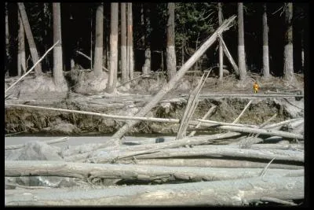

Sống trên lahar cổ
Nhiều thành phố, trong đó có Tacoma, được xây trên các trầm tích lahar tiền sử trải dài hàng kilômét qua các đồng bằng ngập lũ quanh núi Rainier. Núi Baker, Washington, cũng có hiểm họa lahar tương tự.
Giám sát
Các nhà địa chất theo dõi dấu hiệu sắp phun trào bằng ba phương pháp chính:
| Hiểm họa | Bản chất | Ví dụ (số người chết, theo chương) |
|---|---|---|
| Luồng mạt vụn núi lửa | Mây nóng (200–700 °C) gồm tro, đá bọt, khối đá và khí; tới 193 km/h | Pelée 1902 (28.000); Vesuvius năm 79 |
| Sạt lở / sóng thần | Sườn dốc đổ sụp; sinh sóng nếu đổ xuống biển | Unzen 1792 (15.000); Krakatau 1883 (36.000) |
| Mạt vụn núi lửa / tro | Mảnh vụn bị phóng ra; tro < 2 mm bay xa | Eyjafjallajökull 2010 (hàng không tê liệt) |
| Khí | CO2, SO2, H2S, HF, HCl, HBr; phun trào limnic | Hồ Nyos 1986 (gần 2.000); núi Mammoth 2006 (3) |
| Lahar | Dòng bùn từ tuyết hoặc băng tan cùng tro; tới 80 km/h | Nevado del Ruiz 1985 (khoảng 23.000) |
| Dòng dung nham | Dễ thấy nhất, thường chậm | Kīlauea 2018 (thiệt hại tài sản) |
Tự kiểm tra: Bài kiểm tra mục 4.5 trong giáo trình (tiếng Anh) ↗
Tóm tắt
Đá magma hoặc là đá xâm nhập, đông cứng từ magma dưới lòng đất, hoặc là đá phun trào, hình thành từ dung nham phun ra và nguội trên bề mặt. Magma hình thành từ vật chất manti trong nhiều bối cảnh kiến tạo mảng nhờ nóng chảy do giảm áp, do chất lưu hoặc do gia nhiệt. Thành phần của nó phụ thuộc vào nhiệt độ nóng chảy khác nhau của các khoáng vật (chuỗi phản ứng Bowen) và bị biến đổi bởi nóng chảy từng phần, phân dị magma, đồng hóa và trộn lẫn. Núi lửa rất đa dạng về hình dạng và kích thước, được phân loại theo các yếu tố như thành phần magma và bối cảnh kiến tạo. Vì hoạt động núi lửa đe dọa nghiêm trọng đến con người, các nhà địa chất giám sát núi lửa chặt chẽ.
Ôn nhanh
- Magma ở dưới đất, dung nham ở trên mặt. Nguội chậm: hạt thô (hiển tinh, xâm nhập). Nhanh: hạt mịn (ẩn tinh, phun trào). Cực nhanh: thủy tinh. Hai giai đoạn: porphyr.
- Khí tạo đá có lỗ hổng (scoria, đá bọt); mạt vụn núi lửa từ phun nổ tạo đá vụn núi lửa (tuf). Mạt vụn núi lửa: tro < 2 mm, sỏi núi lửa 2–64 mm, bom/khối > 64 mm.
- Thành phần: felsic (granit/rhyolit) → trung tính (diorit/andesit) → mafic (gabro/bazan) → siêu mafic (peridotit/komatiit); silica giảm, Fe và Mg tăng.
- Các thể: thể tường (bất chỉnh hợp), thể vỉa và thể nấm (chỉnh hợp), pluton, thể cán, thể nền (> 100 km²).
- Bowen: olivin trước tiên (~1.250 °C), thạch anh sau cùng (~700 °C); plagioclas chuyển từ giàu Ca sang giàu Na.
- Gradien địa nhiệt ~25 °C/km. Nóng chảy: giảm áp (sống núi, tách giãn), chất lưu (hút chìm), gia nhiệt (điểm nóng).
- Phân dị làm magma felsic hơn: đồng hóa (thể tù) và kết tinh phân đoạn.
- Độ nhớt tăng theo silica. Hình khiên (mafic, phun tràn) → nón tro xỉ → núi lửa dạng tầng → vòm dung nham → caldera (felsic, phun nổ).
- Hiểm họa: luồng mạt vụn núi lửa (chết người nhất), sạt lở/sóng thần, tro, khí, lahar, dung nham. Giám sát động đất, khí và biến dạng mặt đất.
Tự kiểm tra: Bài ôn tập Chương 4 trong giáo trình (tiếng Anh) ↗
Tài liệu tham khảo
Ghi chú kiểm chứng
Mọi nội dung trong tài liệu đã được đối chiếu với chương trong giáo trình. Khi chương khác với tài liệu tham khảo hiện hành hoặc tự mâu thuẫn, tài liệu giữ giá trị của chương (đó là nội dung bạn sẽ được kiểm tra) trừ khi có ghi chú, và liệt kê điểm khác biệt ở đây.
| Chủ đề | Chương viết | Ghi chú |
|---|---|---|
| Tuổi hồ Crater | "Khoảng 7700 năm trước" (chú thích) và "khoảng 6.800 năm trước" (bài viết) | USGS xác định vụ phun đỉnh điểm của núi Mazama cách đây khoảng 7.700 năm (USGS); 6.800 là tuổi carbon phóng xạ cũ, chưa hiệu chỉnh. Tài liệu dùng 7.700. |
| Núi Shasta | "Núi Shasta ở bang Washington" | Núi Shasta ở Bắc California. Đã sửa trong chú thích. |
| Núi Ontake 2014 | Luồng mạt vụn núi lửa; 47 người chết | Con số cuối cùng là 63 (58 chết, 5 mất tích). Đây là vụ phun thủy lực (phreatic, do hơi nước) (Smithsonian GVP; USGS), đúng như chính mô tả của chương gợi ý. |
| Núi Unzen 1991 | Dòng chảy làm 41 người chết | Dòng ngày 3/6/1991 thường được ghi nhận làm 43 người chết, trong đó có hai nhà núi lửa học Katia và Maurice Krafft (Đại học Oregon State). |
| Chú thích Kīlauea 2018 | "Dung nham độ nhớt cao" | Dung nham Kīlauea là bazan độ nhớt thấp, như chính phần viết về núi lửa hình khiên của chương. Tài liệu bỏ chữ "độ nhớt cao". |
| Khoảng silica | Felsic 65–75%, trung tính 55–60%, mafic 45–50%, siêu mafic ≤ 40% | Các khoảng của chương để hở khoảng trống. Tài liệu thông dụng dùng ranh giới liên tục, vd. felsic > 63%, trung tính 52–63%, mafic 45–52%, siêu mafic < 45% (Earle, Physical Geology, được chương trích dẫn). Bảng giữ giá trị của chương. |
| Kích thước caldera | "Đường kính tới 25 km" | Chính các ví dụ của chương lớn hơn: Long Valley rộng 17 × 32 km, và caldera trẻ nhất của Yellowstone khoảng 30 × 45 dặm, tức khoảng 50 × 70 km (USGS). Nên hiểu 25 km là cỡ điển hình, không phải tối đa. |
| Tóm tắt của chương | Thành phần thay đổi do "nóng chảy từng phần, phân dị magma, đồng hóa và va chạm" | Chương không mô tả "va chạm"; phần thân nêu trộn lẫn magma và tái nóng chảy. Phần tóm tắt của tài liệu ghi là trộn lẫn. |
| Lỗi đánh máy | "Normal L. Bowen"; "Ariaka Sea"; "Kiluea"; "Bisho Tuff" | Đã sửa thành Norman L. Bowen, biển Ariake, Kīlauea, tuf Bishop. |
Hình "Granit từ Cape Cod" trong chương dùng một ảnh của USGS mà nguồn ghi là monzonit thạch anh, một loại đá giống granit; tài liệu ghi nguồn như vậy. Tên hai nhánh của chuỗi phản ứng Bowen (gián đoạn, liên tục) được bổ sung từ tài liệu chuẩn; mọi nội dung khác trong các hình đều lấy từ chương.
Nguồn & trích dẫn
Nội dung tóm tắt từ An Introduction to Geology, Chương 4, © 2017 Chris Johnson, Matthew D. Affolter, Paul Inkenbrandt và Cam Mosher, theo giấy phép CC BY-NC-SA 4.0. Tài liệu này được chia sẻ theo cùng giấy phép. Hình ảnh lấy từ chương và giữ nguyên giấy phép riêng, ghi trong chú thích từng hình:
- CC BY / CC BY-SA: như ghi trong chú thích từng hình.
- Phạm vi công cộng: tác phẩm của chính phủ Hoa Kỳ (USGS, NASA, NOAA, Cục Công viên Quốc gia) và các hình khác như đã ghi.
- Các ô kiến trúc, thể xâm nhập, chuỗi phản ứng Bowen, đồ thị nóng chảy, kết tinh phân đoạn, núi lửa dạng tầng và mặt cắt các kiểu núi lửa: vẽ cho tài liệu này theo nội dung và hình của chương.